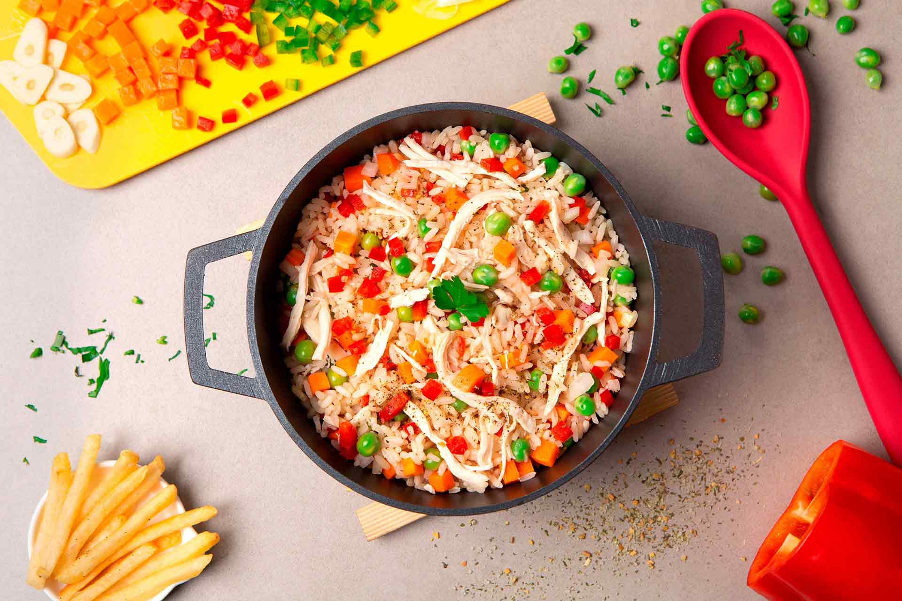

la receta de hoy es:
Arroz de pollo colombiano

Introduccion
El arroz con pollo colombiano es uno de los platos más emblemáticos y apreciados de la gastronomía tradicional de Colombia. Su combinación de arroz sazonado, pollo desmechado, verduras frescas y especias lo convierte en una receta completa, nutritiva y llena de sabor. Este plato se caracteriza por su color amarillo intenso, obtenido gracias al achiote o al color alimenticio, y por la mezcla de ingredientes que aportan una textura y un aroma inconfundibles.
Es una preparación muy versátil, ya que cada región del país tiene su propia forma de elaborarlo, incorporando ingredientes y técnicas que reflejan las costumbres locales. En algunas zonas se agregan maíz, habichuelas, apio o incluso cerveza para potenciar el sabor, mientras que en otras se acompaña con papa a la francesa, tajadas de plátano maduro, ensalada fresca o aguacate.
Además de ser un plato delicioso, el arroz con pollo representa la unión familiar y la tradición culinaria colombiana. Es común encontrarlo en celebraciones como cumpleaños, reuniones familiares, festividades, almuerzos dominicales y eventos especiales, donde suele prepararse en grandes cantidades para compartir. Su facilidad de conservación y su excelente sabor incluso después de recalentado lo convierten en una opción práctica y muy popular en los hogares colombianos.
Gracias a su equilibrio entre proteínas, carbohidratos y verduras, el arroz con pollo es considerado una comida completa que aporta energía y nutrientes esenciales. Su popularidad ha trascendido las fronteras de Colombia, convirtiéndose en una receta reconocida y apreciada en diferentes países de América Latina, aunque cada uno conserva su propia versión.
Historia del arroz con pollo
La historia del arroz con pollo tiene sus raíces en la influencia de la gastronomía española, especialmente en la paella valenciana, un plato tradicional que llegó a América durante la época de la colonización. Con el intercambio cultural entre Europa y América, las recetas fueron adaptándose a los ingredientes disponibles en cada región, dando origen a nuevas preparaciones que reflejaban la identidad de cada país.
En Colombia, esta receta comenzó a transformarse incorporando productos propios del territorio, como el achiote para dar color, el cilantro fresco, las arvejas, la zanahoria y diferentes tipos de pimentón y cebolla. Con el tiempo, el pollo reemplazó a otros ingredientes más costosos o difíciles de conseguir, convirtiéndose en la proteína principal debido a su disponibilidad y precio accesible.
Durante el siglo XX, el arroz con pollo se consolidó como uno de los platos más representativos de la cocina casera colombiana. Su preparación se popularizó gracias a su facilidad para alimentar a numerosas personas con ingredientes económicos y nutritivos, lo que lo convirtió en una opción ideal para reuniones familiares, celebraciones escolares, fiestas comunitarias y eventos sociales.
Cada región del país desarrolló su propia versión de la receta. En la región Caribe suele prepararse con un toque más condimentado y colorido; en la región Andina se caracteriza por un sabor más suave y equilibrado; mientras que en otras zonas se añaden ingredientes locales que enriquecen su sabor y presentación. Estas variaciones reflejan la diversidad cultural y gastronómica de Colombia.
En la actualidad, el arroz con pollo continúa siendo un símbolo de tradición, hospitalidad y convivencia. Su presencia es habitual tanto en hogares como en restaurantes, y sigue transmitiéndose de generación en generación como parte del patrimonio culinario colombiano. Más que una simple receta, representa el valor de compartir la mesa, preservar las costumbres familiares y mantener viva una de las preparaciones más queridas de la cocina nacional.
Lista de ingredientes recomendados:
- Arroz
- Pechuga de pollo
- Zanahoria
- Arvejas (guisantes)
- Pimentón rojo
- Cebolla larga
- Ajo
- Cilantro
- Aceite vegetal
- Caldo de pollo
- Sal
- Pimienta
- Color o achiote
Metodo de cocion recomendado:
- Cocinar la pechuga de pollo.
- Desmechar el pollo.
- Sofreír la cebolla, ajo y pimentón.
- Agregar la zanahoria y las arvejas.
- Incorporar el arroz.
- Añadir el caldo de pollo y el color.
- Cocinar hasta que el arroz esté listo.
- Mezclar el pollo desmechado.
acompañante mas comunes
- Papa a la francesa
- Ensalada fresca
- Aguacate
- Patacones
- Tajadas de plátano maduro
Datos Curiosos
- Es uno de los platos más preparados en cumpleaños y reuniones familiares.
- En algunas regiones se acompaña con papa a la francesa.
- También suele servirse con ensalada, tajadas de plátano maduro o aguacate.